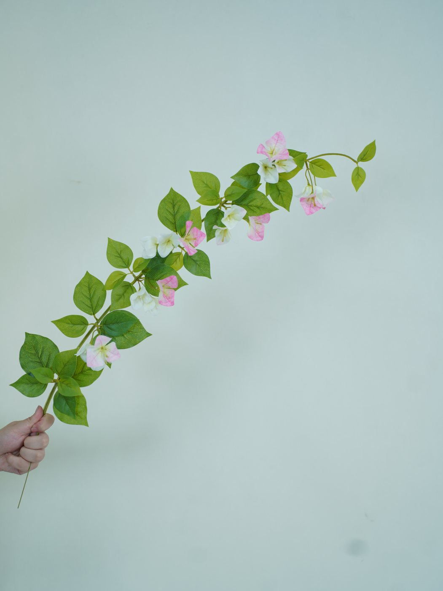
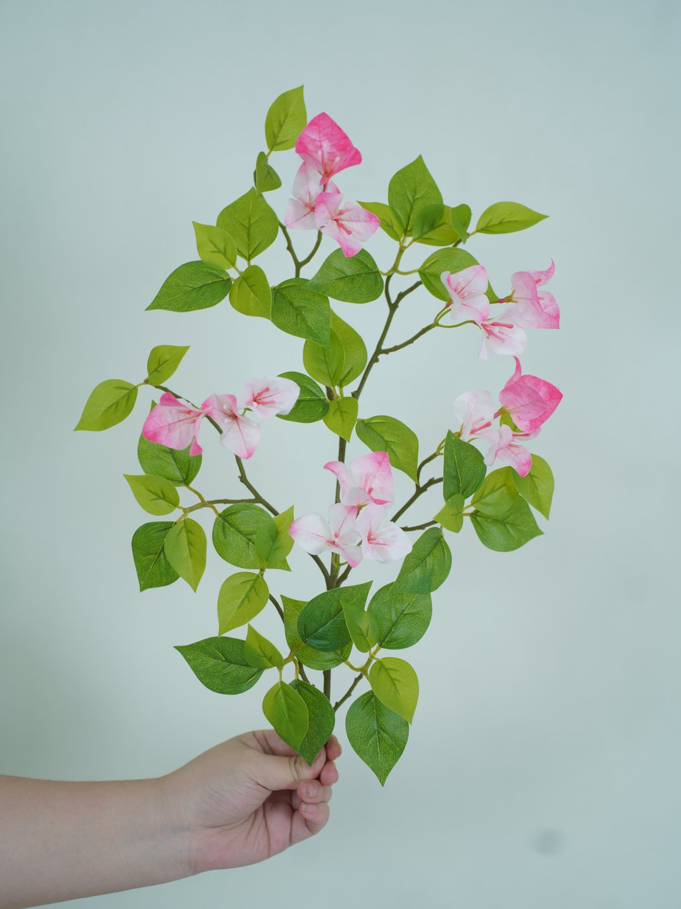

Small Plants & Sprigs
Custom Pink-White & Green-White Sprigs
Custom Pink-White & Green-White Sprigs is a compact filler ideal for small planters, terrariums, and floral arrangements. This is a factory photograph of the actual product; exact dimensions, packing, MOQ, lead time and price are confirmed by the seller on inquiry.
Opens your email application; sending happens there.
Product information
Custom Pink-White & Green-White Sprigs is a compact filler ideal for small planters, terrariums, and floral arrangements. This is a factory photograph of the actual product; exact dimensions, packing, MOQ, lead time and price are confirmed by the seller on inquiry.
Specifications
| Product code | LC-N076 |
|---|